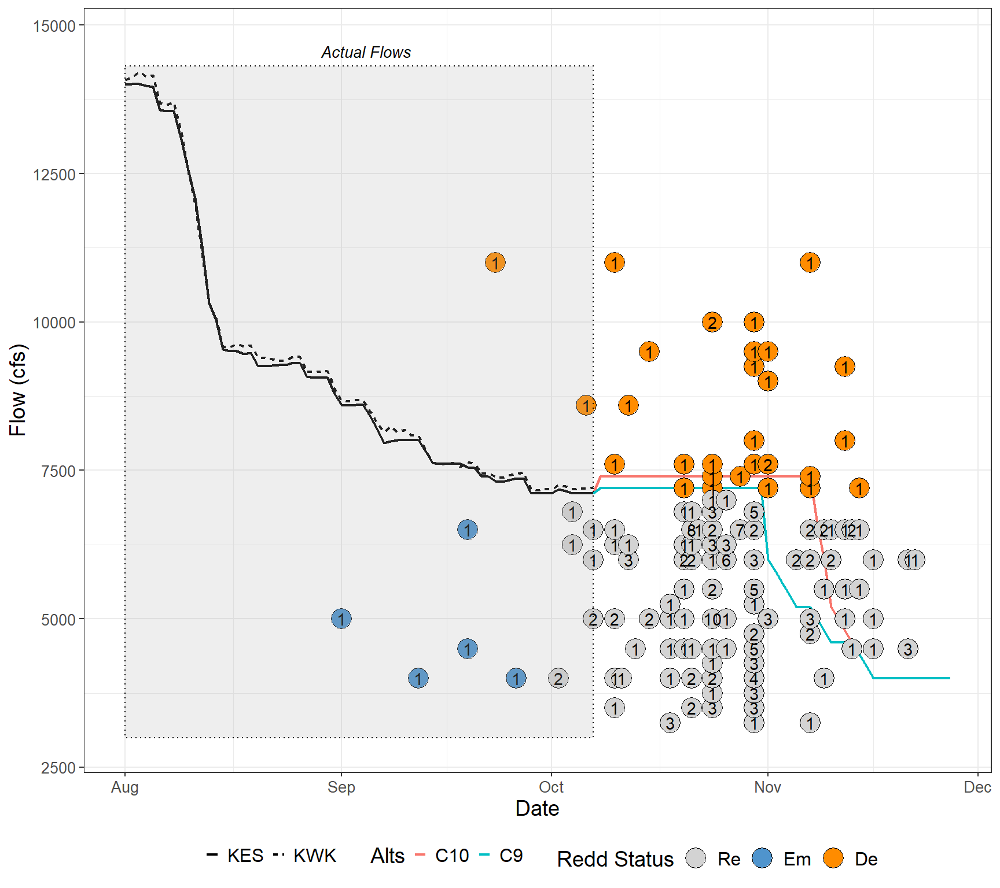

| Expansion Factor | Total Redds | Dewatering Threshold (1%) |
|---|---|---|
| 1.0 | 2675 | 27 |
| 1.5 | 4012 | 40 |
| 2.0 | 5350 | 54 |
| 2.5 | 6688 | 67 |
| 3.0 | 8025 | 80 |
| 3.5 | 9362 | 94 |
PRELIMINARY DATA: Redd Dewatering Estimates for Keswick Fall Flow Scenarios
BDO Science Division
August 26, 2025
Background
This script constructs real-time winter-run redd dewatering estimates based on most recent data available from CDFW (as of August 21, 2025) for winter-run data and using a redd dewatering estimate tool from USFWS (2006; see citation). Data are also available in the 2025 Winter-run Data file.xls online at calfish.org.
This document is also now available on SacPAS. However, data on the SacPAS webpage may not immediately reflect data in the document as updates to the webpage with newest flow and redd data may be pending.
Please note that all data are preliminary until data collection is finalized. Likewise, there are uncertainties with forecasts which may lead to changes in proposed operations.
Winter-run Redd Counts
As of August 20, 2025, the unexpanded redd count is 2675 Winter-run redds. It is important to note that until data collection is completed for the year these are the minimum number of possible redds. The Winter-run number will always expand upon final analysis but gives an in-season guard rail of the minimum number of redds this year.
Given that the number of Winter-run redds is always larger than the early season carcass counts, an expansion number based on historic data is multiplied by the carcass count to estimate the total number of redds for the season before the end of the season’s final estimate is developed and the final redd count is known. Average 2005-2022 expansion was 2.04 * the total redd count, but we illustrate several different expansion scenarios in the table below.
Redd dewatering estimates
A total of 213 redds are or have been monitored this season. As of August 21, 2025, 0 Winter-run redds have emerged and 11 have been dewatered. This leaves 202 shallow water redds of concern.
There is no real time data on fall-run redd counts. Estimates are predicted based on estimated dewatering percentages from USFWS (2006) and spring-run and fall-run spawn timing based on fresh female carcasses encountered from 2014 through 2023. Emergence timing were predicted from water temperatures below Keswick individually for each year and dewatering was estimated for each scenario for each year to capture annual variance in spawn timing. Fall-run dewatering estimates range from 6.4 to 25.6% (see detailed data in table below). Note that fall-run dewatering estimates are likely overestimated using the dewatering percentages from USFWS (2006), and likely do not reflect actual dewatering percentages and should only be used for comparative purposes between scenarios. A comparative analysis between field and modeled dewatering percentages by Gosselin and Beer (2024) can be found here.
| Scenario | 2014 | 2015 | 2016 | 2017 | 2018 | 2019 | 2020 | 2021 | 2022 | 2023 |
|---|---|---|---|---|---|---|---|---|---|---|
| A4 | 14.7 | 13.8 | 8.8 | 8.4 | 12.7 | 11.9 | 12.7 | 15.8 | 14.0 | 8.1 |
| B4 | 10.4 | 10.1 | 6.7 | 6.6 | 9.4 | 9.1 | 9.4 | 11.7 | 11.4 | 6.4 |
| C2 | 22.4 | 21.0 | 14.8 | 16.8 | 22.9 | 19.5 | 18.7 | 25.6 | 23.4 | 15.9 |
| C3 | 15.7 | 14.5 | 9.9 | 10.8 | 15.6 | 13.7 | 13.2 | 17.8 | 15.9 | 10.4 |
Carryover Effects to Next Year Winter-run Brood
An analysis on the relationship between winter-run chinook salmon temperature dependent mortality relationship and Shasta Reservoir end-of-year storage suggests a threshold of 2,200 TAF end of September Shasta Storage to assess the impacts of TDM impacts on next year’s cohort. Next year’s cohort is expected to experience minimal TDM impacts when end of September Shasta Storage is greater than this threshold, while values lower than 2,200 TAF are correlated with potentially more negative TDM impacts. As of August, End of September Shasta Storage is expected to be approximately 2.6. All proposed scenarios are anticipated to have EOS storage greater than the 2,200 TAF threshold and therefore would not be expected to contribute to TDM impacts to winter-run chinook salmon in the subsequent year. Scenarios focused on avoiding dewatering of winter-run redds have higher releases through early November which is not factored into this performance indicator.
Preliminary Predicted Results
Below are summarized results of scenarios as they relate to total volume, winter-run redd dewatering, and fall-run redd dewatering by scenario. Note that winter-run redd dewatering is predicted and based on estimated flow in which a redd may be dewatered prior to emergence. Fall-run redd dewatering is averaged over multiple years of spawning data.
| Volume Measures | C2 | A4 | B4 | C3 |
|---|---|---|---|---|
| Avg Sept Flow (cfs) | 8750 | 8500 | 8500 | 8508 |
| Avg Oct Flow (cfs) | 8750 | 7500 | 6500 | 8006 |
| Sept-Feb Total Volume (TAF) | 2094 | 1978 | 1917 | 2020 |
| Aug-Sept Total Volume (TAF) | 1195 | 1177 | 1177 | 1176 |
| Dewatering Count Measures | C2 | A4 | B4 | C3 |
|---|---|---|---|---|
| Winter-run Redds Dewatered | 26 | 60 | 79 | 52 |
| Winter-run Redds Dewatered (250 cfs buffer) | 32 | 73 | 112 | 64 |
| Dewatering % Measures | C2 | A4 | B4 | C3 |
|---|---|---|---|---|
| Winter-run % Lost (expansion factor = 1) | 1.0 | 2.2 | 3.0 | 1.9 |
| Winter-run % Lost (expansion factor = 2.04) | 0.5 | 1.1 | 1.4 | 1.0 |
| Winter-run % Lost (250 cfs buffer) | 1.2 | 2.7 | 4.2 | 2.4 |
| Fall-run % Redds Dewatered | 20.1 | 12.1 | 9.1 | 13.8 |

| Scenario | Description |
|---|---|
| C2 | Scenario focused on reducing winter-run redd dewatering developed on August 14, 2025. |
| A4 | Scenario using August 90% exceedance forecast developed on August 20, 2025. Adjusted for late August changes to Keswick releases. Does not follow ramping rate criteria. |
| B4 | Scenario using August 50% Exceedance Forecast developed on August 20, 2025. Adjusted for late August changes to Keswick releases. Does not use ramping rate criteria. |
| C3 | Scenario focused on avoiding dewatering more than one percent of winter-run dewatered redds assuming a 2.5 expansion factor, balancing fall-run dewatering, and assuming low redd viability of late emerging winter-run redds due to redd superimposition. Developed on August 21, 2025. |
References
Gard, Mark. 2006. Relationships between flow fluctuations and redd dewatering and juvenile stranding for Chinook Salmon and Steelhead in the Sacramento River between Keswick Dam and Battle Creek. 94 pages.
Gosselin, J.L. and W.N. Beer. 2024. Sacramento River Winter-run Chinook Salmon Redd Dewatering: a Note on Comparing Observed and Predicted. Central Valley Prediction and Assessment of Salmon (SacPas; https://www.cbr.washington.edu/sacramento/). Columbia Basin Research, School of Aquatic and Fishery Sciences, University of Washington.